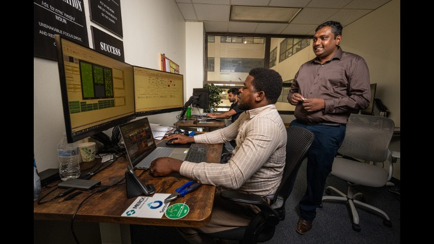
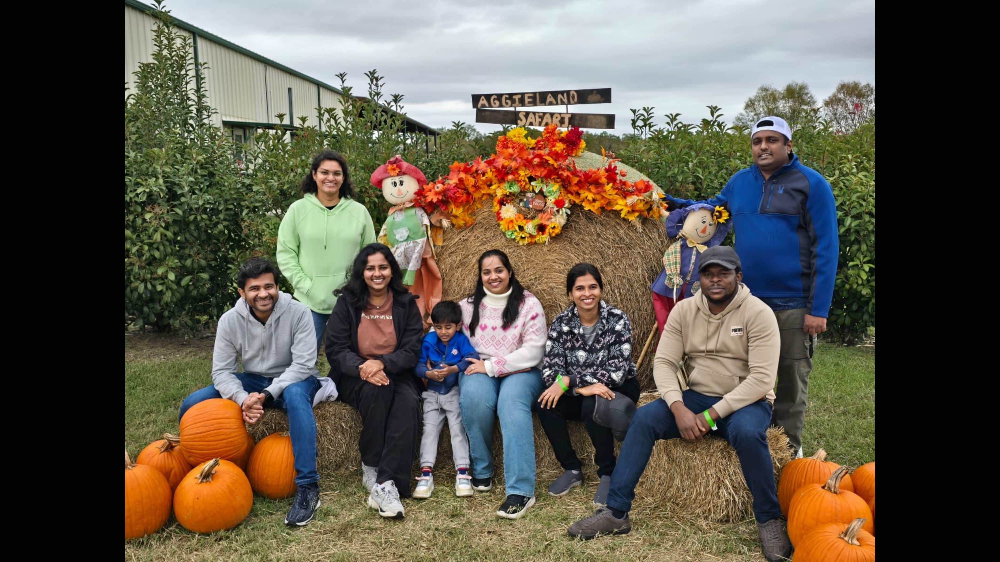
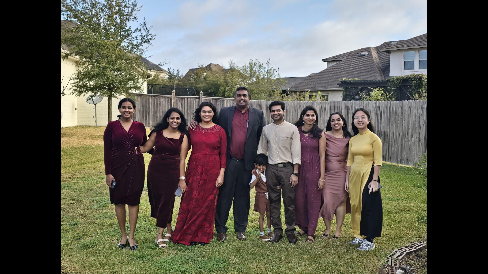
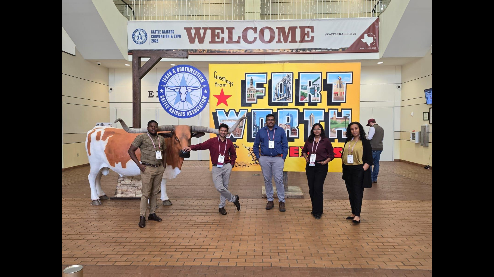

Join us in harnessing the power of artificial intelligence to revolutionize livestock systems through interdisciplinary collaboration, practical learning, research, and community engagement.
Register to JoinThe AISFS Club brings together forward-thinking students from diverse academic backgrounds who share a passion for sustainable agriculture, artificial intelligence, and livestock systems innovation.
Students interested in animal husbandry, nutrition, agricultural systems, livestock management, and sustainable production.
Students interested in artificial intelligence, machine learning, robotics, automation, sensors, data analytics, and decision-support systems.
Students interested in sustainable business models, economic analysis, social impact, technology adoption, and community engagement.
To be a premier learning hub of innovation and excellence where interdisciplinary collaboration between artificial intelligence and animal science shapes the future of sustainable food systems.
To empower students with cutting-edge knowledge and practical skills at the intersection of artificial intelligence and livestock management through research, education, and community engagement.
We encourage creative thinking and the development of AI-driven solutions that advance animal science and sustainable agriculture.
We foster partnerships among students, faculty, industry professionals, producers, and communities.
We aim for high-quality research, education, outreach, and real-world impact in livestock and food systems.
We support members through mentorship, skill development, practical experience, and confidence-building opportunities.
AISFS Club creates a vibrant ecosystem for learning, innovation, and real-world impact.
Technical training on AI tools, sensors, data collection, machine learning, data analysis, and automation.
Interdisciplinary projects exploring AI-based solutions for animal health, productivity, sustainability, and decision-making.
Opportunities to observe AI and precision livestock technologies at progressive farms, laboratories, and research facilities.
Collaborative problem-solving events focused on real challenges in food systems, livestock production, and sustainability.
Student-led presentations, project showcases, feedback sessions, and networking opportunities.
Engagement with agricultural communities to share accessible AI-driven practices for livestock farming.
Explore moments from AISLS Lab and AISFS Club activities, including student engagement, research collaboration, presentations, and hands-on learning experiences.

AISFS Club brings students together to explore artificial intelligence, animal science, and sustainable food systems.
Members learn through discussion, mentorship, teamwork, and interdisciplinary exchange.

Students gain experience developing, presenting, and communicating research ideas.

The club supports practical learning through workshops, applied projects, and real-world problem solving.

Members build technical skills, research confidence, and professional networks in AgTech and sustainable livestock systems.
Build practical skills in AI programming, machine learning, data analysis, IoT systems, and livestock-focused technology.
Connect with researchers, industry innovators, faculty mentors, and other students interested in AgTech.
Gain hands-on experience with emerging technologies, research projects, presentations, and industry partnerships.
Contribute to solutions for food security, environmental sustainability, animal welfare, and farmer livelihoods.
New students are welcome to join the Artificial Intelligence for Sustainable Food Systems Club. Complete the registration form to become part of the AISFS community and receive future updates about meetings, workshops, projects, and events.
Open Student Registration FormTogether, we can create a more sustainable future for livestock systems while addressing critical challenges in global food security, environmental conservation, animal welfare, and farmer livelihoods.